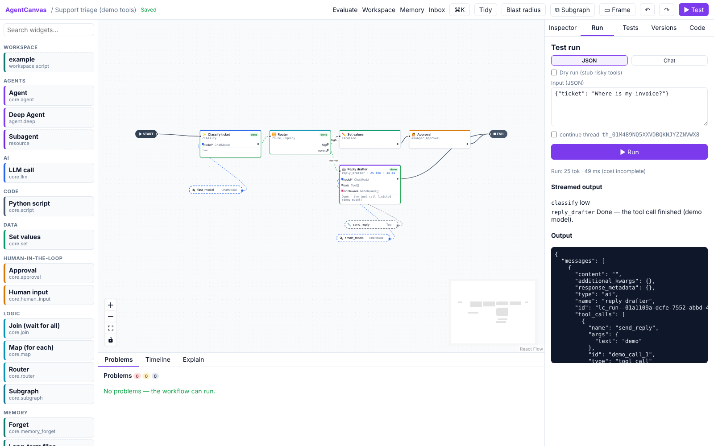

Building on the canvas

The editor at a glance
| Area | What it does |
|---|---|
| Palette (left) | Every widget, grouped by category, plus your workspace scripts, tools and custom widgets. Type in Search widgets… to filter. |
| Canvas (middle) | Your workflow. ▶ START and ■ END mark where runs begin and finish. Steps are solid cards, resources are dashed boxes. |
| Toolbar (top) | ⌘K command palette, Tidy (auto-layout), Blast radius, ⧉ Subgraph, ▭ Frame, undo ↶ / redo ↷, ▶ Test, and links to Evaluate, Workspace, Memory and Inbox. |
| Side panel (right) | Inspector (settings of the selection, or the Workflow panel when nothing is selected), Run, Tests, Versions, Code. |
| Dock (bottom) | Problems, Timeline, Explain. |
Themes. The switch at the right of the top bar on every page picks Light, Medium (a softer dimmed slate), Dark, or System (follows your computer). Your choice is remembered in this browser.
Add and connect steps
- Add: drag a widget from the palette onto the canvas, or use the ⌘K palette.
- Connect: drag from a handle on one card to a handle on another. Step-to-step edges define order;
resource-to-port edges give a step its model, tools or middleware. Ports are typed and colour-coded (for
example
model*takes a ChatModel,toolstakes a list of Tools;*means required). A connection that doesn't fit is refused with the reason. - Configure: click a card. The Inspector shows its name (used in code and the API), label (shown on the
card) and a settings form. Prompts and many fields are templates over the state:
{{ state.ticket }}. Conditions (routers, policies, filters) are written in CEL, e.g.state.urgency == "high". - Select several: drag a selection box or shift-click. Copy and paste with ⌘C / ⌘V (Ctrl on Windows/Linux).
- Undo / redo: ⌘Z and ⇧⌘Z, or the ↶ ↷ buttons.
- Tidy lays the graph out automatically.
Everything saves automatically. If someone else saved the same workflow in the meantime, you are told about the conflict instead of overwriting it.
State channels
Click an empty spot on the canvas to open the Workflow panel. There you set the name, description, recursion limit (the maximum number of steps per run), durability (how eagerly checkpoints are written: exit fastest, async default, sync for workflows with side effects), a budget, and the state channels (see Core concepts). + Channel adds one.
Budgets
A budget stops a run that spends too much: maximum tokens, cost (USD, from catalog prices) or seconds per run, and maximum tokens or cost per thread (all runs of a conversation together).
Structure: subgraphs and frames
- ⧉ Subgraph (or ⌘G) turns the selected steps into one Subgraph step with its own state. Input channels are copied in and output channels copied back. Double-click to work inside it.
- ▭ Frame draws a labelled box around the selected steps. It is purely visual.
Problems
The Problems dock validates the workflow continuously. Codes starting with E are errors (the workflow can't
run until they are fixed), W are warnings, I are hints. Click a problem to jump to the step it is about.
Organisation policies show up here too (E095, or W095 for rules that only apply in
one environment).
Blast radius
Blast radius colours every step by what it can do to the outside world (write, send, execute, spend) and whether a human approves it first. Use it before publishing to spot ungated side effects. A dry run (Run tab) replaces every risky tool with a recorder so you can run the whole workflow safely.
Generated code
The Code tab shows the LangGraph Python program generated from the canvas. Each block is tagged with the card
it came from (# ── @canvas-node … ──). It is read-only: change the canvas and the code follows. To take the code
away, use Export (see Publish and integrate).